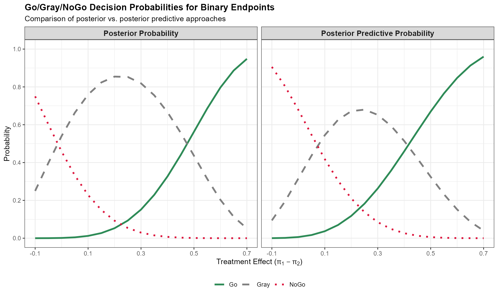

Bayesian Decision Making for Binary Endpoints
Source:vignettes/binary-endpoints.Rmd
binary-endpoints.Rmd
library(BayesianQDM)
library(dplyr)
#>
#> Attaching package: 'dplyr'
#> The following objects are masked from 'package:stats':
#>
#> filter, lag
#> The following objects are masked from 'package:base':
#>
#> intersect, setdiff, setequal, union
library(tidyr)
library(ggplot2)Introduction
The BayesianQDM package provides comprehensive methods for Bayesian quantitative decision-making in clinical trials with binary endpoints. This vignette demonstrates how to use the package for calculating posterior probabilities, posterior predictive probabilities, and Go/NoGo/Gray decision probabilities.
Basic Concepts
Decision Framework
The Bayesian decision-making framework categorizes trial outcomes into three zones:
- Go: Evidence suggests the treatment is effective (proceed to next phase)
- NoGo: Evidence suggests the treatment is not effective (stop development)
- Gray: Evidence is inconclusive (may need additional data)
Posterior and Posterior Predictive Probabilities
Basic Usage
Let’s start with calculating posterior probabilities for a controlled design:
# Calculate posterior probability
posterior_prob <- BayesPostPredBinary(
prob = 'posterior',
design = 'controlled',
theta0 = 0.15,
n1 = 12, n2 = 15, y1 = 7, y2 = 9,
a1 = 0.5, a2 = 0.5, b1 = 0.5, b2 = 0.5,
m1 = NULL, m2 = NULL, # Not needed for posterior probability
ne1 = NULL, ne2 = NULL, ye1 = NULL, ye2 = NULL, ae1 = NULL, ae2 = NULL # No external data
)
cat("Posterior probability that treatment effect > 0.15:", round(posterior_prob, 4))
#> Posterior probability that treatment effect > 0.15: 0.1776Now let’s calculate posterior predictive probability:
# Calculate posterior predictive probability
predictive_prob <- BayesPostPredBinary(
prob = 'predictive',
design = 'controlled',
theta0 = 0.1,
n1 = 12, n2 = 15, y1 = 7, y2 = 7,
a1 = 0.5, a2 = 0.5, b1 = 0.5, b2 = 0.5,
m1 = 30, m2 = 30, # Required for predictive probability
ne1 = NULL, ne2 = NULL, ye1 = NULL, ye2 = NULL, ae1 = NULL, ae2 = NULL # No external data
)
cat("Posterior predictive probability that future trial effect > 0.1:", round(predictive_prob, 4))
#> Posterior predictive probability that future trial effect > 0.1: 0.4904External Control Design
The package supports incorporating external (historical) control data using power priors:
# Posterior probability with external control data
external_prob <- BayesPostPredBinary(
prob = 'posterior',
design = 'external',
theta0 = 0.15,
n1 = 12, n2 = 15, y1 = 7, y2 = 9,
a1 = 0.5, a2 = 0.5, b1 = 0.5, b2 = 0.5,
m1 = NULL, m2 = NULL, # Not needed for posterior probability
ne1 = 12, ne2 = 12, ye1 = 6, ye2 = 6,
ae1 = 0.5, ae2 = 0.5
)
cat("Posterior probability with external control:", round(external_prob, 4))
#> Posterior probability with external control: 0.1399Go/NoGo/Gray Decision Probabilities
Controlled Design with Posterior Probability
# Calculate Go/NoGo/Gray probabilities using posterior probability
decision_posterior <- BayesDecisionProbBinary(
prob = 'posterior',
design = 'controlled',
theta.TV = 0.3, # Go threshold
theta.MAV = 0.1, # NoGo threshold
theta.NULL = NULL, # Not needed for posterior probability
gamma1 = 0.8, # Minimum probability for Go
gamma2 = 0.2, # Maximum probability for NoGo
pi1 = c(0.2, 0.4, 0.6, 0.8),
pi2 = rep(0.2, 4),
n1 = 12, n2 = 12,
a1 = 0.5, a2 = 0.5, b1 = 0.5, b2 = 0.5,
z = NULL, # Not needed for controlled design
m1 = NULL, m2 = NULL, # Not needed for posterior probability
ne1 = NULL, ne2 = NULL, ye1 = NULL, ye2 = NULL, ae1 = NULL, ae2 = NULL # No external data
)
print(decision_posterior)
#> pi1 pi2 Go Gray NoGo
#> 1 0.2 0.2 0.002318252 0.5525139 0.4451678823
#> 2 0.4 0.2 0.075866100 0.8277906 0.0963432993
#> 3 0.6 0.2 0.384587482 0.6056116 0.0098009636
#> 4 0.8 0.2 0.811071055 0.1887120 0.0002168992Controlled Design with Posterior Predictive Probability
# Calculate Go/NoGo/Gray probabilities using posterior predictive probability
decision_predictive <- BayesDecisionProbBinary(
prob = 'predictive',
design = 'controlled',
theta.TV = NULL, theta.MAV = NULL, # Not needed for predictive probability
theta.NULL = 0.15, # Threshold for future trial
gamma1 = 0.9, # Minimum probability for Go
gamma2 = 0.3, # Maximum probability for NoGo
pi1 = c(0.2, 0.4, 0.6, 0.8),
pi2 = rep(0.2, 4),
n1 = 12, n2 = 12,
a1 = 0.5, a2 = 0.5, b1 = 0.5, b2 = 0.5,
z = NULL, # Not needed for controlled design
m1 = 30, m2 = 30, # Required for predictive probability
ne1 = NULL, ne2 = NULL, ye1 = NULL, ye2 = NULL, ae1 = NULL, ae2 = NULL # No external data
)
print(decision_predictive)
#> pi1 pi2 Go Gray NoGo
#> 1 0.2 0.2 0.005970708 0.3778064 0.6162228820
#> 2 0.4 0.2 0.091467562 0.7159306 0.1926018751
#> 3 0.6 0.2 0.391528671 0.5804408 0.0280304883
#> 4 0.8 0.2 0.811527612 0.1874944 0.0009779969Visualization of Decision Probabilities
# Create comprehensive decision probability data
# Split into separate scenarios to avoid vectorization issues
posterior_results <- BayesDecisionProbBinary(
prob = 'posterior', design = 'controlled',
theta.TV = 0.3, theta.MAV = 0.1, theta.NULL = NULL,
gamma1 = 0.8, gamma2 = 0.2,
pi1 = seq(0.1, 0.9, by = 0.05), pi2 = rep(0.2, length(seq(0.1, 0.9, by = 0.05))),
n1 = 12, n2 = 15, a1 = 0.5, a2 = 0.5, b1 = 0.5, b2 = 0.5,
z = NULL, m1 = NULL, m2 = NULL,
ne1 = NULL, ne2 = NULL, ye1 = NULL, ye2 = NULL, ae1 = NULL, ae2 = NULL
) %>%
mutate(prob = 'posterior', theta = pi1 - pi2)
predictive_results <- BayesDecisionProbBinary(
prob = 'predictive', design = 'controlled',
theta.TV = NULL, theta.MAV = NULL, theta.NULL = 0.15,
gamma1 = 0.9, gamma2 = 0.3,
pi1 = seq(0.1, 0.9, by = 0.05), pi2 = rep(0.2, length(seq(0.1, 0.9, by = 0.05))),
n1 = 12, n2 = 15, a1 = 0.5, a2 = 0.5, b1 = 0.5, b2 = 0.5,
z = NULL, m1 = 30, m2 = 30,
ne1 = NULL, ne2 = NULL, ye1 = NULL, ye2 = NULL, ae1 = NULL, ae2 = NULL
) %>%
mutate(prob = 'predictive', theta = pi1 - pi2)
# Combine results
results <- bind_rows(posterior_results, predictive_results) %>%
mutate(Gray = pmax(Gray, 0)) # Ensure non-negative Gray probabilities
# Create visualization
figure <- results %>%
pivot_longer(
cols = c(Go, NoGo, Gray), names_to = 'Decision', values_to = 'Prob'
) %>%
mutate(
prob = factor(prob, levels = c('posterior', 'predictive')),
Decision = factor(Decision, levels = c('Go', 'Gray', 'NoGo'))
) %>%
ggplot(aes(x = theta, y = Prob)) +
facet_wrap(~ prob, labeller = labeller(prob = c(
'posterior' = 'Posterior Probability',
'predictive' = 'Posterior Predictive Probability'
))) +
geom_line(aes(colour = Decision, linetype = Decision), linewidth = 1.2) +
theme_bw() +
scale_color_manual(
values = c('Go' = '#2E8B57', 'Gray' = '#808080', 'NoGo' = '#DC143C'),
labels = c('Go', 'Gray', 'NoGo')
) +
scale_linetype_manual(
values = c('Go' = 'solid', 'Gray' = 'dashed', 'NoGo' = 'dotted'),
labels = c('Go', 'Gray', 'NoGo')
) +
scale_x_continuous(
name = expression(paste("Treatment Effect (", pi[1] - pi[2], ")")),
breaks = seq(-0.1, 0.7, by = 0.2)
) +
scale_y_continuous(
name = "Probability",
breaks = seq(0, 1, by = 0.2),
limits = c(0, 1)
) +
labs(
title = "Go/Gray/NoGo Decision Probabilities for Binary Endpoints",
subtitle = "Comparison of posterior vs. posterior predictive approaches"
) +
theme(
legend.position = "bottom",
legend.title = element_blank(),
strip.text = element_text(size = 11, face = "bold"),
axis.title = element_text(size = 11),
plot.title = element_text(size = 13, face = "bold"),
plot.subtitle = element_text(size = 11)
)
print(figure)
Advanced Examples
Uncontrolled Design
For single-arm trials where there’s no concurrent control group:
# Uncontrolled design example
uncontrolled_result <- BayesDecisionProbBinary(
prob = 'posterior',
design = 'uncontrolled',
theta.TV = 0.3,
theta.MAV = 0.1,
theta.NULL = NULL, # Not needed for posterior probability
gamma1 = 0.8,
gamma2 = 0.2,
pi1 = c(0.3, 0.5, 0.7),
pi2 = rep(0.2, 3), # Historical control rate
n1 = 20,
n2 = 20, # Provide n2 even for uncontrolled design
a1 = 0.5, a2 = 0.5, b1 = 0.5, b2 = 0.5,
z = 3, # Fixed number of historical control responders
m1 = NULL, m2 = NULL, # Not needed for posterior probability
ne1 = NULL, ne2 = NULL, ye1 = NULL, ye2 = NULL, ae1 = NULL, ae2 = NULL # No external data
)
print(uncontrolled_result)
#> pi1 pi2 Go Gray NoGo
#> 1 0.3 0.2 0.005138162 0.8877750 1.070868e-01
#> 2 0.5 0.2 0.251722336 0.7469893 1.288414e-03
#> 3 0.7 0.2 0.886668537 0.1133309 5.426947e-07External Control with Power Prior
Incorporating historical data with different power prior weights:
# Compare different power prior weights
power_weights <- c(0.25, 0.5, 0.75, 1.0)
external_results <- purrr::map_dfr(power_weights, ~ {
result <- BayesDecisionProbBinary(
prob = 'posterior',
design = 'external',
theta.TV = 0.25,
theta.MAV = 0.05,
theta.NULL = NULL, # Not needed for posterior probability
gamma1 = 0.8,
gamma2 = 0.2,
pi1 = c(0.3, 0.5),
pi2 = rep(0.2, 2),
n1 = 15, n2 = 15,
a1 = 0.5, a2 = 0.5, b1 = 0.5, b2 = 0.5,
z = NULL, # Not needed for external design
m1 = NULL, m2 = NULL, # Not needed for posterior probability
ne1 = 20, ne2 = 20, ye1 = 8, ye2 = 4,
ae1 = .x, ae2 = .x
)
result$power_weight <- .x
result
})
print(external_results)
#> pi1 pi2 Go Gray NoGo power_weight
#> 1 0.3 0.2 0.015781945 0.9315259 5.269216e-02 0.25
#> 2 0.5 0.2 0.211410056 0.7856294 2.960528e-03 0.25
#> 3 0.3 0.2 0.007654917 0.9758953 1.644983e-02 0.50
#> 4 0.5 0.2 0.117916273 0.8812829 8.008043e-04 0.50
#> 5 0.3 0.2 0.004800407 0.9899853 5.214270e-03 0.75
#> 6 0.5 0.2 0.111006745 0.8887984 1.948866e-04 0.75
#> 7 0.3 0.2 0.002421413 0.9961884 1.390148e-03 1.00
#> 8 0.5 0.2 0.056317900 0.9436415 4.064003e-05 1.00Prior Sensitivity Analysis
Examining the impact of different beta prior parameters:
# Compare different prior specifications
prior_specs <- list(
"Vague (0.5, 0.5)" = list(a1 = 0.5, a2 = 0.5, b1 = 0.5, b2 = 0.5),
"Uniform (1, 1)" = list(a1 = 1, a2 = 1, b1 = 1, b2 = 1),
"Informative (2, 8)" = list(a1 = 2, a2 = 2, b1 = 8, b2 = 8)
)
sensitivity_results <- purrr::map_dfr(names(prior_specs), function(prior_name) {
specs <- prior_specs[[prior_name]]
result <- BayesPostPredBinary(
prob = 'posterior', design = 'controlled', theta0 = 0.15,
n1 = 20, n2 = 20, y1 = 12, y2 = 8,
a1 = specs$a1, a2 = specs$a2, b1 = specs$b1, b2 = specs$b2,
m1 = NULL, m2 = NULL,
ne1 = NULL, ne2 = NULL, ye1 = NULL, ye2 = NULL, ae1 = NULL, ae2 = NULL
)
tibble(prior_type = prior_name, posterior_prob = result)
})
print(sensitivity_results)
#> # A tibble: 3 × 2
#> prior_type posterior_prob
#> <chr> <dbl>
#> 1 Vague (0.5, 0.5) 0.613
#> 2 Uniform (1, 1) 0.592
#> 3 Informative (2, 8) 0.451Interpretation Guidelines
Go Decision
- High posterior/predictive probability that treatment effect exceeds efficacy threshold
- Proceed to next phase of development
- Typical threshold: P(θ > θ_TV | data) ≥ 0.8
Parameter Selection Guidelines
Prior Selection
- Vague priors (a = b = 0.5): Minimal prior influence, data-driven
- Jeffreys priors (a = b = 0.5): Non-informative
- Informative priors: Incorporate historical knowledge
Operating Characteristics
Sample Size Impact
# Compare different sample sizes
sample_sizes <- c(10, 20, 30, 50)
oc_results <- purrr::map_dfr(sample_sizes, function(n) {
result <- BayesDecisionProbBinary(
prob = 'posterior', design = 'controlled',
theta.TV = 0.3, theta.MAV = 0.1, theta.NULL = NULL,
gamma1 = 0.8, gamma2 = 0.2,
pi1 = 0.5, pi2 = 0.2, # True effect of 0.3
n1 = n, n2 = n,
a1 = 0.5, a2 = 0.5, b1 = 0.5, b2 = 0.5,
z = NULL, m1 = NULL, m2 = NULL,
ne1 = NULL, ne2 = NULL, ye1 = NULL, ye2 = NULL, ae1 = NULL, ae2 = NULL
)
result$sample_size <- n
result
})
print(oc_results)
#> pi1 pi2 Go Gray NoGo sample_size
#> 1 0.5 0.2 0.2319733 0.7241512 0.043875553 10
#> 2 0.5 0.2 0.1920041 0.7950247 0.012971126 20
#> 3 0.5 0.2 0.1646170 0.8295862 0.005796791 30
#> 4 0.5 0.2 0.1916907 0.8067639 0.001545432 50Summary
The BayesianQDM package for binary endpoints provides:
- Posterior probability calculations for treatment effects
-
Posterior predictive probability for future trial
success
- Go/NoGo/Gray decision frameworks with customizable thresholds
- Multiple design types including controlled, uncontrolled, and external control
- Power prior integration for historical data incorporation
This Bayesian approach enables evidence-based decision making that accounts for uncertainty and incorporates prior knowledge, making it particularly valuable for early-phase clinical trial decision making.